윤곽, 미백, 탄력을 한 번에
윤곽, 미백, 탄력을 한 번에
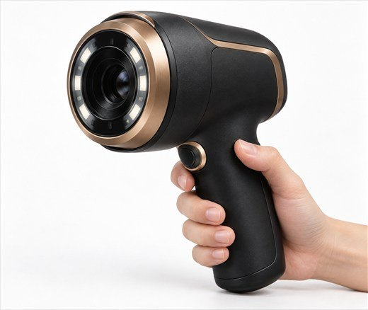
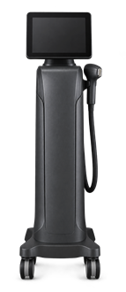
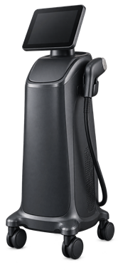
피부 고민은 대개 한 가지로 끝나지 않고
누구나 되도록 빨리 한꺼번에 풀고 싶어집니다.
나이와 바깥 자극으로 느슨해진 근막층,
내려앉는 지방, 어두워지는 피부까지 여러 고민을
가지게 됩니다.
이 고민들을 한 번에
풀 수는 없을까 해서 나온 방법
복합 리프팅입니다.
당기고, 조이고, 밝히는 세 가지를 함께 챙기는
레이저 복합 리프팅으로 얼굴선이 갸름해지고
환해지는 변화를 확인해 보세요.
point 01
얼굴선이 처지고 꺼짐이 깊은 피부인지,
안색이 어두워 보이는 피부인지
어떤 곳이 핵심 문제인지 살펴
먼저 가린 뒤 맞는 시술을 고릅니다
온연 의료진의 임상 경험과 연구를 바탕으로
내원하신 분의 상태를 정확하게 살핀 뒤 그에 맞춰 시술해
가장 꼼꼼하게 결과를 다듬어 냅니다.
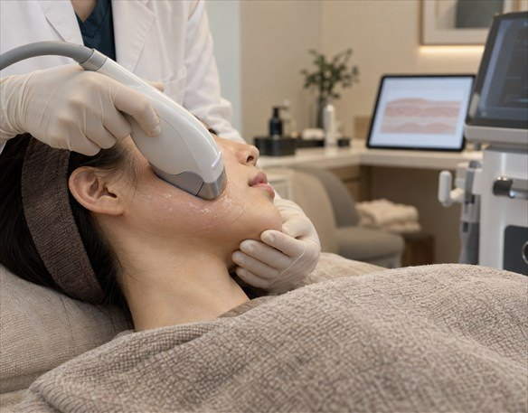
STACK 모드
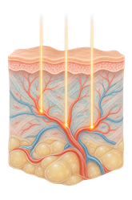
· 세기를 정해 필요한 만큼만 쏠 수 있음
· 겹쳐 쏘는(STACKING) 방식으로 원하는 부위에 집중
· 피부 깊은 층을 중심으로 열을 전달
· 얼굴선과 유지인대를 당기고 두꺼운 피부에 알맞음
· 피부 깊은 곳부터 끌어올림
SHR 모드
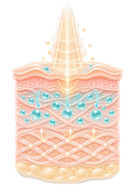
· 정해 둔 에너지를 나눠 쓰며 쏨
· 움직이며 쏘는(IN-MOTION) 방식으로 부위 전체에 고르게
· 진피층을 중심으로 열을 전달
· 이중턱, 볼살, 주름처럼 얼굴 전체에 알맞음
· 시술 직후 탄력과 밝기가 달라짐
point 01
얼굴선이 처지고 꺼짐이 깊은 피부인지,
안색이 어두워 보이는 피부인지
어떤 곳이 핵심 문제인지 살펴
먼저 가린 뒤 맞는 시술을 고릅니다
온연 의료진의 임상 경험과 연구를 바탕으로
내원하신 분의 상태를 정확하게 살핀 뒤 그에 맞춰 시술해
가장 꼼꼼하게 결과를 다듬어 냅니다.
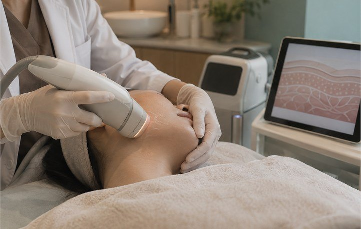
point 02
시술 때의 강한 불편함, 긴 회복 기간
리프팅을 망설이게 했던 이유입니다.
세 가지 파장을 함께 쏘는 핸드피스와
빠르게 이어지는 레이저로 피부 깊은 곳까지 닿는 에너지
불편함과 붉어짐, 회복 기간을 줄여 주는 접촉 냉각 기능
복합 리프팅은 이런 단점을 줄이고
시술 뒤 바로 일상으로 돌아가실 수 있습니다.
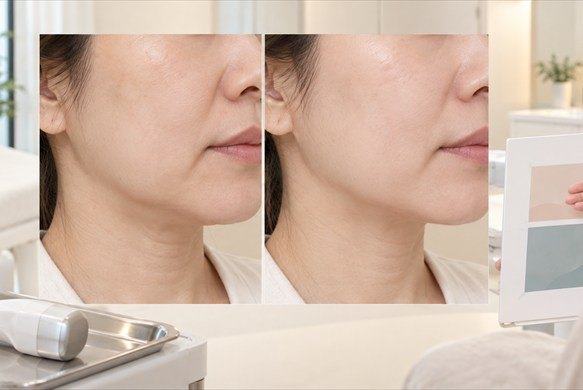
point 02
시술 때의 강한 불편함, 긴 회복 기간
리프팅을 망설이게 했던 이유입니다.
세계 최초 3파장(755nm, 810nm, 1064nm)이
함께 쏘는 핸드피스와 빠르게 이어지는 레이저로
피부 깊은 곳까지 닿는 에너지
불편함과 붉어짐, 회복 기간을 줄여 주는
접촉 냉각 기능
복합 리프팅은 이런 단점을 줄이고
시술 뒤 바로 일상으로 돌아가실 수 있습니다.
세 가지 파장을 동시에 쓰는 레이저
복합 리프팅은 좋은 장비지만, 그 변화를 끌어내는 건 결국 의사의 손입니다.
피부에 필요한 시술을 곁들여 시술 직후의 변화를
더 오래 지키고 탄력도 더해 줍니다.
복합 파장리프팅 + 피부 재생 주사
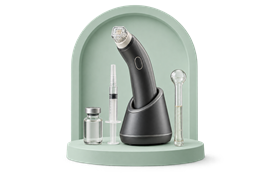
피부 속부터 쫀쫀하고
탄력있게
복합 파장리프팅 + 윤곽 고주파
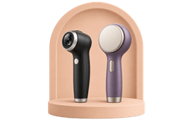
리프팅 + 리프팅
다른 효과 시너지
복합 파장리프팅 + 집속 초음파 리프팅
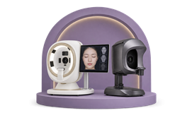
3파장 + 초음파
리프팅 효과 강화
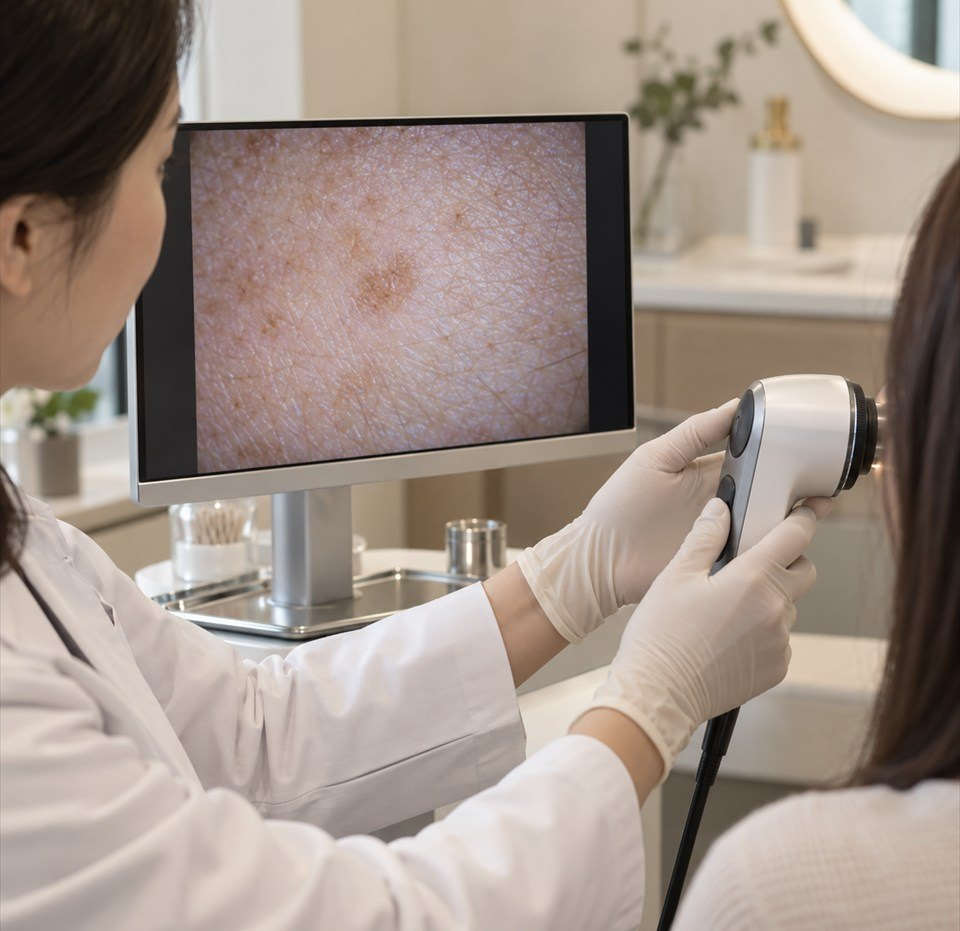
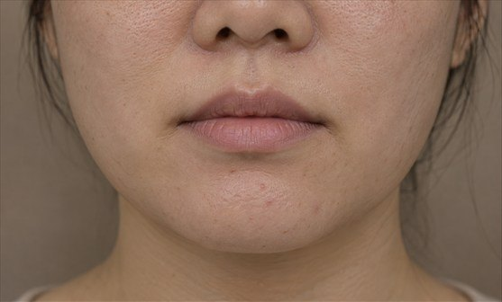
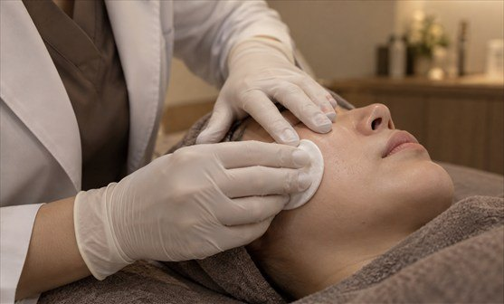
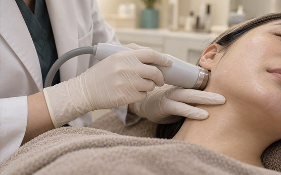
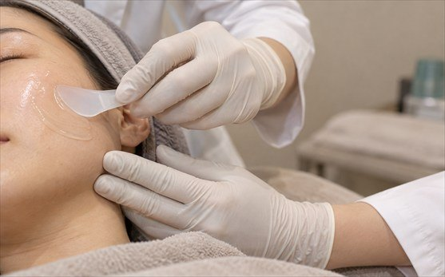
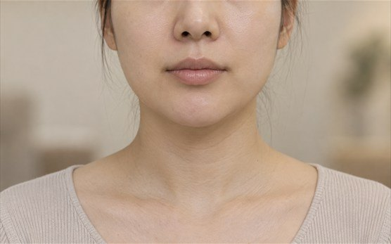
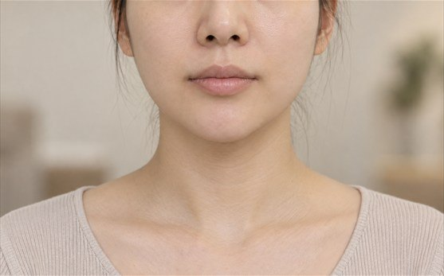
ONYEON SYSTEM
01
상담부터 관리까지
편하게 받는 진료
온연피부과의원은 상담할 때
생활 습관과 일정까지 묻습니다.
고민을 편하게 털어놓고 꼼꼼히 관리받으며
피부가 나아지는 과정까지 즐거우셨으면 합니다.
02
피부과 전문의의
손끝 경험과 꾸준한 공부
피부과 전문의들이 함께 진료하는
온연피부과의원. 의료진 모두가 더 건강한
피부를 위해 꾸준히 공부하고 연구합니다.
03
장비로 재고 판단하는
근거 있는 피부 진단
눈에 보이는 증상은 물론 숨어 있는 문제와
시술 뒤의 변화까지 미리 따져 피부 속 문제를
정확히 짚어 진료합니다.
04
숙련된 의료진과
40여 개 최신 장비
숙련된 피부과 전문의와 오랫동안
손발을 맞춰 온 의료진,
그리고 안전 장비까지.
모두 한 병원 안에 있습니다.
ONYEON SYSTEM
01
상담부터 관리까지
편하게 받는 진료
온연피부과의원은 상담할 때
생활 습관과 일정까지 묻습니다.
고민을 편하게 털어놓고 꼼꼼히 관리받으며
피부가 나아지는 과정까지 즐겁기를
바랍니다.
02
피부과 전문의의
손끝 경험과 꾸준한 공부
피부과 전문의들이 함께 진료하는
온연피부과의원. 의료진 모두가 더 건강한
피부를 위해 꾸준히 공부하고 연구합니다.
03
장비로 재고 판단하는
근거 있는 피부 진단
눈에 보이는 증상은 물론 숨어 있는 문제와
시술 뒤의 변화까지 미리 따져 피부 속 문제를
정확히 짚어 진료합니다.
04
숙련된 의료진과
40여 개 최신 장비
숙련된 피부과 전문의와 오랫동안
손발을 맞춰 온 의료진,
그리고 안전 장비까지.
모두 한 병원 안에 있습니다.